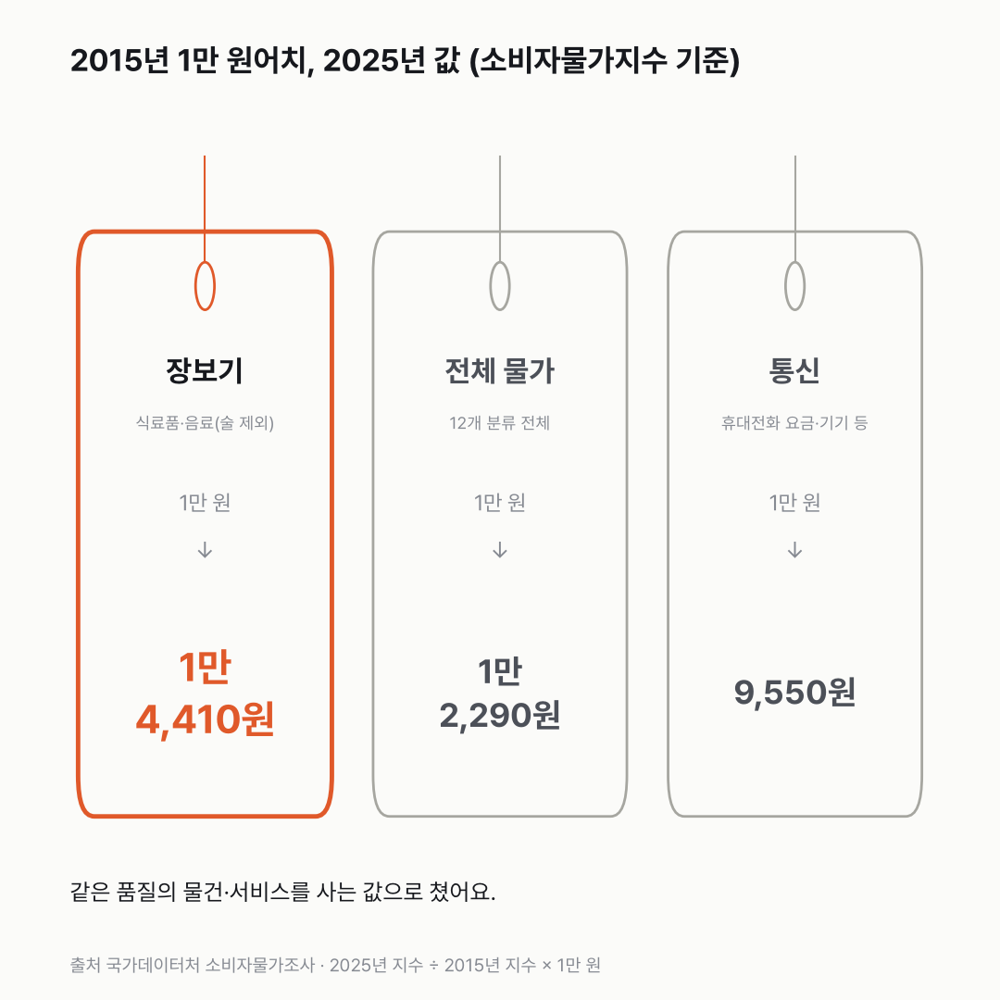
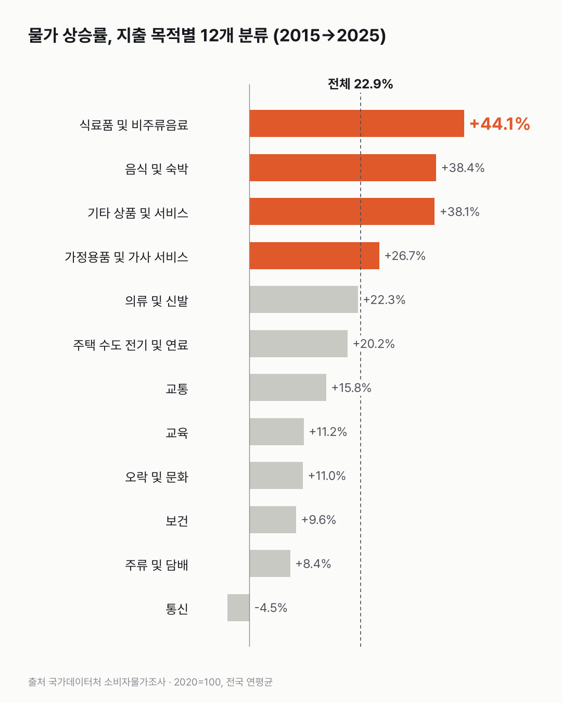
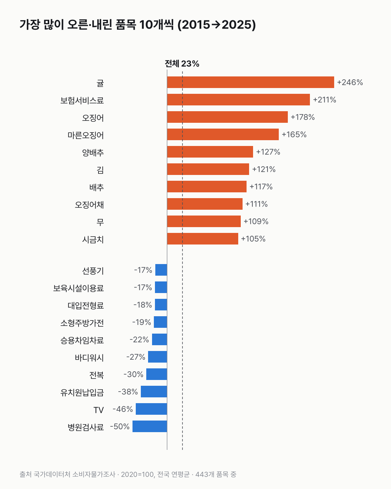

10년 전 1만 원 장바구니, 지금은 얼마일까요
장바구니에 담는 먹거리 값이 전체 물가보다 두 배 가까이 빨리 올랐어요.

- 10년 동안 전체 물가는 22.9% 올랐어요. 2015년에 1만 원이던 것이 2025년엔 1만 2,290원이에요.
- 장보기(식료품·비주류음료)는 44.1%, 외식·숙박은 38.4% 올라 12개 분류 중 1, 2위예요.
- 12개 분류 중 값이 내린 건 통신 하나예요(−4.5%).
물가 표에서 값이 가장 많이 뛴 건 뭘까요? 품목 443개를 오른 순서로 줄 세워 보니 맨 위는 귤이었어요. 10년 새 +246%. 분류로 묶으면 장보기(식료품·비주류음료)가 가장 많이 올라, 2015년에 1만 원 하던 바구니가 2025년엔 1만 4,410원을 찍어요.
밖에서 사 먹는 값도 크게 올랐어요. 외식이 들어 있는 음식·숙박은 38.4%로 2위예요. 1만 원이던 게 1만 3,840원이 됐어요. 12개 분류 중 1, 2위가 둘 다 먹거리예요.


내린 건 통신 하나뿐이에요. 1만 원이던 게 9,550원이 됐어요. 교육(11.2%), 오락·문화(11.0%), 보건(9.6%), 술·담배(8.4%)는 전체보다 덜 올랐어요.
다시 품목 표로 내려가 봤어요. 먹거리만 이어 보면 귤 다음이 오징어 +178%, 마른오징어 +165%, 양배추 +127%, 김 +121%, 배추 +117%예요. 상위 10개 중 9개가 먹거리고, 나머지 하나는 보험서비스료(+211%)예요.
값이 내린 품목도 있어요. 병원검사료 −50%, TV −46%, 유치원납입금 −38%. 물론 TV는 성능이 좋아진 만큼 지수에선 내린 걸로 잡혀요.


같은 1만 원으로 담을 수 있는 먹거리는 10년 새 줄었어요. 그사이 월급은 얼마나 올랐을까요? 이 표엔 그 칸이 없었어요.
이 숫자는 어디서 왔나요
출처
기준일 2015년과 2025년 연평균이에요.
국가데이터처소비자물가조사
- 지출목적별 소비자물가지수(품목포함, 2020=100)KOSIS DT_1J22001원본 보기
전국 연평균 지수: 총지수, 12개 분류, 품목 458개
어떻게 셌나요
- 소비자물가지수는 같은 품질의 물건·서비스 값이 얼마나 변했는지를 보여 주는 숫자예요. 한 개에 얼마인지(가격 수준)는 알 수 없어요.
- 2020년을 100으로 놓은 전국 연평균 지수를 썼어요. 총지수는 전체 물가이고, 12개 분류는 식료품·통신처럼 묶어서 낸 지수예요. 분류별 지수에는 가계 지출에서 차지하는 비중이 반영돼 있어요.
- 상승률은 2025년 지수를 2015년 지수로 나눈 뒤 1을 뺀 값이에요.
- 품목은 두 해 모두 값이 있는 443개만 비교했어요. 나머지 15개는 그사이 새로 생겼거나 빠진 품목이에요.
- '1만 원이던 것이 ○원'은 실제 영수증 금액이 아니에요. 2025년 지수를 2015년 지수로 나눈 비율을 1만 원에 곱하고 10원 단위로 반올림한 값이에요.
한계 6가지
이 데이터로 말할 수 없는 것
- 두 해만 비교했어요. 과일·채소·수산물은 해마다 값이 크게 출렁여요. 그래서 2015~2017년 평균과 2023~2025년 평균으로도 비교했어요. 오징어, 보험서비스료, 귤, 배 등 상위 품목은 거의 같았어요. 다만 정확한 순위는 기준 연도에 따라 바뀔 수 있어요.
- 같은 품질 기준이에요. TV처럼 성능이 좋아진 제품은 지수에서 하락으로 나타날 수 있어요. 실제로 사는 값이 그만큼 내렸다는 뜻은 아닐 수 있어요.
- 품목 순위는 지출 비중과 상관없어요. 귤이 가장 많이 올랐어도 가계 지출에서 차지하는 비중은 작아요. 지출 비중을 반영한 값은 분류별 지수(본문의 장보기·외식·통신 비교)를 보는 게 맞아요.
- 명목 기준이에요. 같은 기간 임금이 얼마나 올랐는지와는 비교하지 않았어요. 그러려면 다른 통계가 필요해요.
- 원인은 말하지 않아요. 작황, 환율, 제도 변화(예: 보육·교육 지원) 등 이유는 이 데이터로 알 수 없어요.
- 보험서비스료는 품목 정의를 따로 확인하지 못했어요. 어떤 보험의 무엇을 재는 품목인지는 통계설명자료로 확인해야 해요.
계산 기록
쓰기 전에 정한 것
- 상승률은 2025년 지수 ÷ 2015년 지수 − 1로 내고, 두 해 모두 값이 있는 품목만 비교하기로 데이터를 받기 전에 정했어요.
- 지수는 같은 품질의 가격 변화라서, "커피 한 잔 ○원"처럼 실제 값은 말하지 않기로 미리 정했어요. '1만 원이던 것이 ○원'은 지수 비율을 1만 원에 곱한 환산이라 이 원칙은 그대로예요.
- 품목 순위에는 지출 비중이 들어 있지 않아서, 분류 단위도 함께 보기로 했어요.
- 3년 평균 비교는 결과를 본 뒤, 신선식품 값이 크게 출렁여서 더한 확인이에요. 결론은 바뀌지 않았어요. 쓰는 중에 더한 거라 여기 적어 둬요.
처음 던진 질문
2015년 마트에서 먹을거리를 골라 장바구니에 담고, 계산대에 올렸더니 딱 1만 원이 나왔다고 해 볼게요. 그 바구니를 하나도 바꾸지 않고 2025년 계산대에 그대로 올리면 얼마가 찍힐지, 소비자물가지수의 분류와 품목을 따라 천천히 내려가 봤어요.
수집·검증 기록
- 표: KOSIS DT_1J22001. 수집일 2026-10-29 (KOSIS 오픈API). 2020=100, 전국 연평균. 품목 458개 중 두 해 모두 값이 있는 443개 비교.
- 계산: 상승률 = 2025년 지수 ÷ 2015년 지수 − 1.
- 환산: '1만 원이던 것이 ○원' = 같은 표의 2025년 지수 ÷ 2015년 지수 × 1만 원, 10원 단위 반올림. 식료품·비주류음료 126.86 ÷ 88.041 → 1만 4,410원, 총지수 116.61 ÷ 94.861 → 1만 2,290원, 음식·숙박 124.50 ÷ 89.974 → 1만 3,840원, 통신 100.32 ÷ 105.017 → 9,550원. 실제 영수증 금액이 아니라 지수 비율을 1만 원에 곱한 것. '두 배쯤'은 44.1% ÷ 22.9% = 1.9배.
- 교차 확인: 총지수 상승률 22.9%가 국가데이터처 공표 연도별 등락률(2016~2025년)을 곱한 누적값 22.9%와 같음.
새 글 나오면 받아 보기
피드 리더 앱에 이 사이트 주소를 한 번 넣어 두면, 새 글이 올라올 때 앱에 떠요. 가입이나 메일 주소는 필요 없어요.
받는 법 보기
- 피드 리더 앱을 하나 골라요. 새 글을 모아 보여 주는 앱이에요. 예를 들면 Feedly나 Inoreader가 있어요. 둘 다 무료고 웹·휴대폰에서 써요.
- 앱에서 '구독 추가'(+)를 누르고 아래 주소를 붙여 넣어요.
- 끝이에요. 새 글이 올라오면 앱 목록에 떠요.
https://protofu.github.io/opendata-insight/feed.xmlFeedly를 쓴다면 여기를 눌러 바로 추가할 수도 있어요.